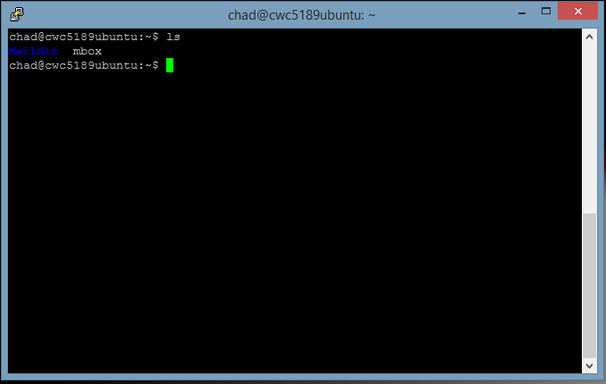
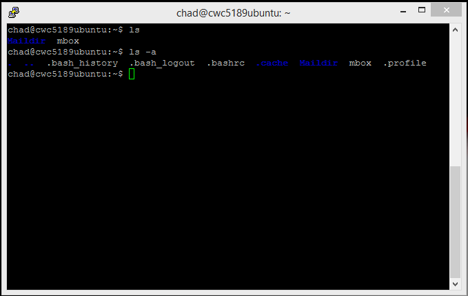
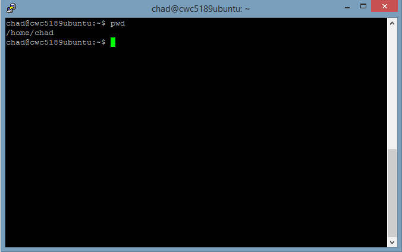
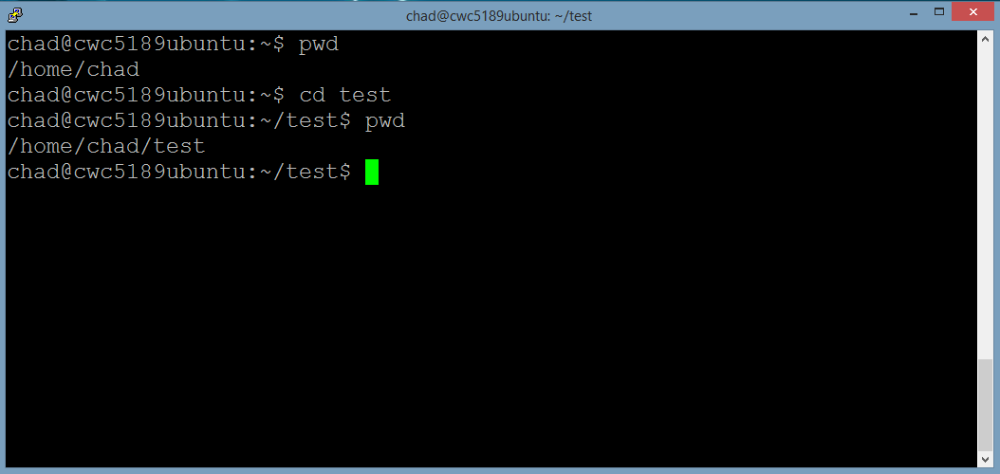
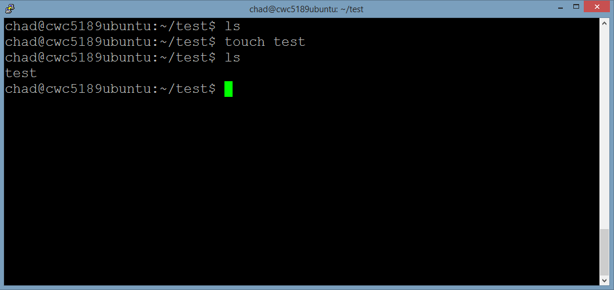

When you first login, your landing directory is your home directory. Your home directory is in the home system folder and has the same name as your user-name, for example, /home/chad/, and it is where your personal files reside.
To find out what's in your home folder, type
% ls
The ls command ( lowercase L and lowercase S ) lists the contents of your current working directory.

There may be no files visible in your home directory, in which case, nothing will show up! Or maybe some system default files will exist.
ls only lists visible files by default. Files beginning with a dot (.) are known as hidden files and usually contain important program configurations. They are hidden because they require a higher level of UNIX to work with/edit correctly!
To list
% ls -a
As you can see, ls -a lists files that are normally hidden.

The -a is an example of an extra option or flag that the command takes into consideration when running. The options change the behaviour of the command. If you want to know more about a command you can use man {command}
There are instances where you may want to know where in your folder structure you are as there is no GUI on the terminal. pwd is a command designed to help with this.
When you enter the command
% pwd
A line is printed showing where you are in the file system you are starting from the root or

As you can see from the picture above, I am in the /home/chad folder... My home directory! One of the most important things of Unix is knowing where you are at all times!
The command 'cd
When you enter the command
% cd test
Unix will look in your current working directory for a folder named test and switch to it if found.
The important thing to note here is that all directory names will be relative to the current directory unless you enter a special symbol. Some examples are:

As you can see from the picture above, I am in my home directory and then I switch to the test folder using the 'cd test' command. I also could have achieved this using 'cd ./test' as '.' means current directory so I am telling Unix to search in my current directory for a folder named test.
The command 'touch
When you enter the command
% touch test
Unix will create in your current working directory a file named test.

As you can see from the picture above, I check to see what files I have in my test folder and none show up. Then create a file named test using the